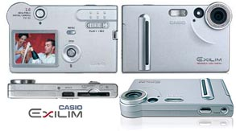

Instructions howto access the storage of the Casio Exilim digital cam
Are you owner of the Casio Exilim digital camera? You don't get any
drivers for using the USB cam under Windows NT? You don't like to run
Windows at all? Do you prefer running Linux kernel series 2.2. but the
related patchlevel doesn't include a fully working USB stack? Don't
worry, there are several ways accessing the storage of the Exilim
depending the Linux kernel patchlevel.

There are several ways accessing your Casio Exilim:
The kernel 2.2. marathon
If you are using a 2.2. kernel series, unfortunately you have to
compile a new operating system using the USB backpatch
(v2.2 Linux USB drivers backport) from kernel series 2.4 which was
backported to older kernels. The problem (in my opinion) is that the
backport is not updated regularly which means that the newest USB code
is missed inside the backpatch. The Casio Exilim series are not
conformant to the USB storage specification - as a result of this,
accessing the camera will fail. Harald Schreiber contributed a patch (Linux USB Support for
Casio QV and Exilim Digital Still Cameras) to the kernel 2.4. version,
this patch will workaround and handle the problem inside the USB stack
(thanks to Harald for this important workaround). If you don't intend
to upgrade to kernel major 2.4 for running the cam under Linux, the
only way I see is to backport Harald's Casio patches to the USB backpatch
from major 2.2. kernel series USB backport and try to get it work. It
seems to me that this needs a lot of knowledge about programming the
USB stack as well as kernel hacking skills and a lot of time.
The kernel 2.4 solution
Believe me, if you really like to use your Exilim cam under Linux (because of the nonconformance of the Casio mass storage implementation), you have to use a majorseries 2.4. kernel (imho support beginning from 2.4.18), the reason is that the USB stack in 2.4. was officially patched by Harald Schreibers Casio workarounds. Because I prefer to run Debian GNU/Linux, I don't like to migrate (upgrade) my systems just for using the digital cam regularly. If you are in the same situation, no worries. You don't have to migrate your whole environment to 2.4. straightly. There are several interim possibilities for having access to the memory of the Casio digicam:
If you're using Debian GNU/Linux (like me), there is an additional way to get the Exilim digital cam work under Linux. Adrian Bunk offered some debian packages ready for downloading and upgrading your Debian to major release 2.4 without replacing related packages manually. I didn't tested this yet, but it is a way to get a 2.4. system running.
However, after successfully migrate or upgrade your distribution to kernel 2.4. you have to be sure that your kernel has enabled following feautures additionally to your convenient settings:
none /proc/bus/usb usbdevfs defaults 0 0Another way accessing the data is the use of libusb and the gphoto2 software (on a well configured and fully working USB bus) instead of using the mass storage driver. Normally, If all works fine, using the mass storage driver is more user friendly. However, there are also additional frontends (imho written in Gtk+) available for having access to the cam through the library and the commandline utility. For more information about setting up the cam this way visit Christian Albers website.
/dev/sda1 /mnt/cam vfat ro,noauto,user 0 0
The kernel 2.4. interim solution No.1 (quick-and-dirty)
If you don't like to upgrade your kernel to 2.4, the easiest way
accessing the cam is by using the self booting knoppix Linux distribution from
CD-ROM. After booting from CD, the system is up in 2 minutes by running
a full featured 2.4. kernel supporting all you need for having
access to your Casio Exilim digital camera. For connecting knoppix to
your network, the network configuration has been done quickly. Using a
network, there are ways to export the pictures to a NFS server or just
by sending the data via FTP to a destination server. After
successfullly copying the images to a another location, a reboot
without CD-ROM will startup your common Linux distribution.
The kernel 2.4. interim solution Nr.2 (my way)
Another way accessing the Exilim without migrating a Linux distribution up to 2.4. is to get a kernel 2.4.x image from a kernel mirror, configure and install the new system and mount the cam via mass storage driver from the USB stack. I currently use kernel image 2.4.9 and it works fine as interim solution for dowloading the images from my cam. The only disadvantage is that the system must be rebootet before downloading the images to the local disk.
If you need more detailed instructions or if you have any further questions or problems setting up your Casio Exilim digital camera, send me an e-mail.
$Id: casio-exilim.html,v 1.9 2020/11/21 11:13:30 gloor Exp $ |